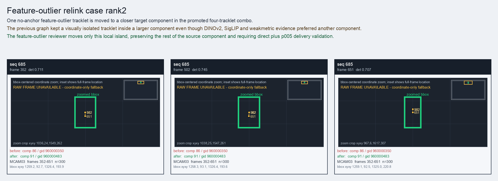

Feature-outlier relink case rank2
One no-anchor feature-outlier tracklet is moved to a closer target component in the promoted four-tracklet combo.
Before
component 86, gid 960000350, component_size 162
component 86, gid 960000350, component_size 162
After
component 91, gid 960000483, component_size 55, decision_status feature_outlier_combo_relink
component 91, gid 960000483, component_size 55, decision_status feature_outlier_combo_relink
Evidence
target_sim=0.9604, target_margin=0.2485, source_rest_margin=0.1345
Raw frame
unavailable_coordinate_fallback
target_sim=0.9604, target_margin=0.2485, source_rest_margin=0.1345
Raw frame
unavailable_coordinate_fallback
Failure and fix
Old failure: The previous graph kept a visually isolated tracklet inside a larger component even though DINOv2, SigLIP and weakmetric evidence preferred another component.
New implementation: The feature-outlier reviewer moves only this local island, preserving the rest of the source component and requiring direct plus p005 delivery validation.
BBox evidence

Moved tracklets
| seq | video | gid | component | frames | dets |
|---|---|---|---|---|---|
| 685 | vlincs_MS01_MC0001_MCAM03_2024-03-Tc6 | 960000350 -> 960000483 | 86 -> 91 | 352-651 | 300 |